Advanced Machine Learning
12: Kernel Density Estimation
Schedule (you are here )
| # | date | topic | description |
|---|---|---|---|
| 1 | 24-Aug-2026 | Introduction | |
| 2 | 26-Aug-2026 | Foundations of learning | Drop/Add |
| 3 | 31-Aug-2026 | PAC learnability | HW1 |
| 4 | 02-Sep-2026 | Linear learning models | |
| 5 | 07-Sep-2026 | Labor Day Holiday | Holiday |
| 6 | 09-Sep-2026 | Principal Component Analysis | Project ideas |
| 7 | 14-Sep-2026 | Curse of Dimensionality | HW2, HW1 due |
| 8 | 16-Sep-2026 | Bayesian Decision Theory | |
| 9 | 21-Sep-2026 | Parameter estimation: MLE | |
| 10 | 23-Sep-2026 | Parameter estimation: MAP & NB | finalize teams |
| 11 | 28-Sep-2026 | Logistic Regression | HW3, HW2 due |
| 12 | 30-Sep-2026 | Kernel Density Estimation | |
| 13 | 05-Oct-2026 | Support Vector Machines | |
| 14 | 07-Oct-2026 | Matrix Factorization | |
| 15 | 12-Oct-2026 | * Midterm | Exam, HW3 due |
| 16 | 14-Oct-2026 | k-means clustering | |
| 17 | 19-Oct-2026 | Invited: Intro to Causal Learning I |
| # | date | topic | description |
|---|---|---|---|
| 18 | 21-Oct-2026 | Invited: Intro to Causal Learning II | |
| 19 | 26-Oct-2026 | * Mid-point projects checkpoint | HW4, P |
| 20 | 28-Oct-2026 | Expectation Maximization | |
| 21 | 02-Nov-2026 | Stochastic Gradient Descent | |
| 22 | 04-Nov-2026 | Automatic Differentiation | |
| 23 | 09-Nov-2026 | Nonlinear embedding approaches | HW5, HW4 due |
| 24 | 11-Nov-2026 | Model comparison | |
| 25 | 16-Nov-2026 | Model Calibration | |
| 26 | 18-Nov-2026 | Convolutional Neural Networks | |
| 27 | 23-Nov-2026 | Thanksgiving Break | Holiday |
| 28 | 25-Nov-2026 | Thanksgiving Break | Holiday |
| 29 | 30-Nov-2026 | Word Embedding | |
| 30 | 02-Dec-2026 | Project Final Presentations | HW5 due, P |
| 31 | 07-Dec-2026 | Presentation spillover / Exam prep | Classes End |
| 32 | 09-Dec-2026 | * Final Exam | Exam |
| 33 | 16-Dec-2026 | Project Reports | due |
| 34 | 17-Dec-2026 | Grades due 5 p.m. | PAWS |
Outline of this lecture
- Non-parametric Density Estimation & Histograms
- Parzen Windows & Kernel Density Estimation
- Bandwidth Selection & Bias-Variance Tradeoff
- Multivariate Density Estimation & Pre-whitening
- Non-parametric Classification & Bridge to SVM
- Take Home Points
Connecting the Dots: The Road to Non-parametric Methods
1. What is learning?
Empirical Risk Minimization, PAC learnability, sample complexity, and generalization bounds.
2. Linear models & representations
Separating hyperplanes, least squares regression, PCA projections, and dimensionality.
3. Probabilistic interpretation & Bayesian learning
Bayesian decision theory, posterior ratio test, and minimizing expected Bayes risk.
4. Parametric parameter estimation
Estimating parameters when analytical functional forms are assumed: MLE, MAP, Naïve Bayes, and Logistic Regression.
5. But what if analytical forms are unknown?
Can we estimate probability densities directly from data and enable Bayesian methods without assuming an analytical distribution?
| # | date | topic |
|---|---|---|
| 1 | 24-Aug-2026 | Introduction |
| 2 | 26-Aug-2026 | Foundations of learning |
| 3 | 31-Aug-2026 | PAC learnability |
| 4 | 02-Sep-2026 | Linear learning models |
| 5 | 07-Sep-2026 | Labor Day Holiday |
| 6 | 09-Sep-2026 | Principal Component Analysis |
| 7 | 14-Sep-2026 | Curse of Dimensionality |
| 8 | 16-Sep-2026 | Bayesian Decision Theory |
| 9 | 21-Sep-2026 | Parameter estimation: MLE |
| 10 | 23-Sep-2026 | Parameter estimation: MAP & NB |
| 11 | 28-Sep-2026 | Logistic Regression |
| 12 | 30-Sep-2026 | Kernel Density Estimation |
Non-parametric Density Estimation
bayesian decision boundary
- If $\prob{P}{\omega_1|\vec{x}} \gt \prob{P}{\omega_2|\vec{x}}$, decide $\omega_1$
- If $\prob{P}{\omega_1|\vec{x}} \lt \prob{P}{\omega_2|\vec{x}}$, decide $\omega_2$
- $\prob{P}{error|\vec{x}} = \min[\prob{P}{\omega_1|\vec{x}}, \prob{P}{\omega_2|\vec{x}}]$
- $\prob{P}{\omega_1|\vec{x}} = \prob{P}{\omega_2|\vec{x}}$ decision boundary
- $\log\frac{\prob{P}{\omega_1|\vec{x}}}{\prob{P}{\omega_2|\vec{x}}} = 0$
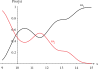
If we know posteriors exactly, this is the optimal strategy!
Non-parametric density estimation
We have assumed that either
- The likelihoods $\prob{P}{\vec{x}|\omega_k}$ were known (likelihood ratio test), or
- At least their parametric form was known (parameter estimation)
What if all that we have and know is the data?
Ooh! Howchallengingexciting!
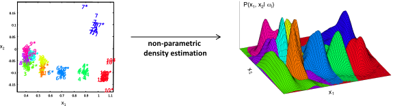
Histogram
The simplest form of non-parametric density estimation
- Divide the sample space into a number of bins;
- Approximate the density by the fraction of training data points that fall into each bin
$$\prob{P}{\vec{x}} = \frac{1}{N}\frac{\text{# of } \vec{x}^i \text{ in the same bin as }\vec{x}}{\text{bin width}}$$
- Need to define: bin width and first bin starting position
-
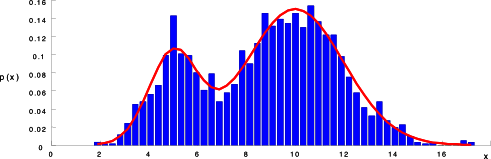
Histogram is simple but problematic
- The density estimate depends on the starting bin position
- The discontinuities of the estimate are only an artifact of the chosen bin locations
- The curse of dimensionality, since the number of bins grows exponentially with the number of dimensions
- Unsuitable for most practical applications except for quick visualizations in one or two dimensions
- Let's leave it alone!
Interactive: Histogram Sensitivity & Artifacts
Bin Width ($h$): 1.60
Origin ($x_0$): 0.00
Occupied Bins: --
Shifting origin $x_0$ alters estimated density without changing any data!
Data:
Non-parametric DE
general formulation
What we are trying to accomplish?
- The probability that $\vec{x}\sim \prob{P}{\vec{x}}$, will fall in a given region $\cal R$ of the sample space is \[ \theta = \int_{\cal R} \prob{P}{\vec{x}^{\prime}}d\vec{x}^{\prime} \]
- Probability that $k$ of $N$ drawn vectors $\{\vec{x}^1, \dots, \vec{x}^N\}$ will fall in region ${\cal R}$ is \[ \prob{P}{k} = {N \choose k} \theta^k (1 - \theta)^{N-k} \]
- From properties of the binomial pmf
$\prob{E}{\frac{k}{N}} = \theta$ $\prob{var}{\frac{k}{N}} = \frac{\theta(1-\theta)}{N}$ - As $N\rightarrow\infty$, variance reduces and we can obtain a good estimate from $ \theta \simeq \frac{k}{N} $
Non-parametric DE
general formulation
- Assume $\cal R$ is so small that $\prob{P}{\vec{x}}$ does not much vary across it \[ \theta = \int_{\cal R} \prob{P}{\vec{x}^{\prime}}d\vec{x}^{\prime} \simeq \prob{P}{\vec{x}}V \]
- Combining with $\theta \simeq \frac{k}{N}$ \[ \prob{P}{x} \simeq \frac{k}{NV} \]
-
We obtain a more accurate estimate increasing $N$ and shrinking $V$
practical considerations
- As $V$ approaches zero ${\cal R}$ encloses no examples
- Have to find a compromise for $V$
- The general expression of nonparametric density becomes
\[ \prob{P}{x} \simeq \frac{k/N}{V} \mbox{, where } \begin{cases} V & \text{volume surrounding } \vec{x} \\ N & \text{total #examples}\\ k & \text{#examples inside } V \end{cases} \]
- For convergence of the estimator we need to provide for:
\begin{align} &\underset{n\to\infty}{\lim} V = 0\\ &\underset{n\to\infty}{\lim} k = \infty\\ &\underset{n\to\infty}{\lim} k/N = 0\\ \end{align}
Two approaches that provide this
- Fix $V$ and estimate $k$ - kernel density estimation (KDE)
- Fix $k$ and estimate $V$ - k-nearest neighbor (kNN)
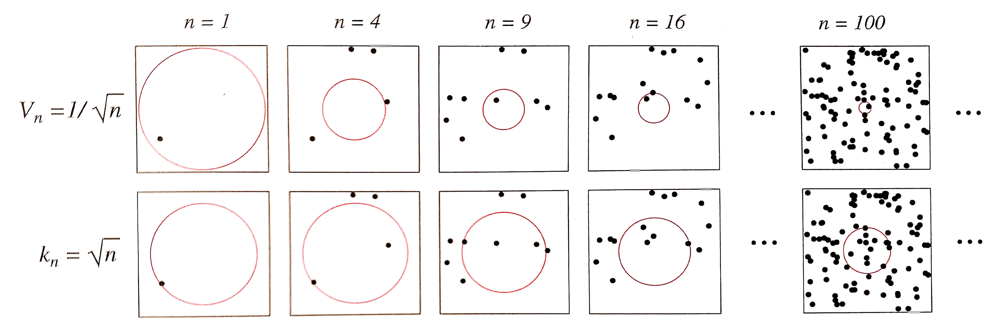
Parzen Windows & KDE
Parzen windows
- Assume the region $\cal R$ enclosing $k$ examples is a hypercube with side of length $h$ centered at $\vec{x}$
- Its volume is $V = h^d$, where $d$ is the dimensionality
- To find the number of examples that fall within this region we define a window function $K(u)$ (a.k.a. kernel) \[ \prob{K}{u} = \begin{cases} 1 & |u_j| \lt \frac{1}{2} \forall j = 1\dots d\\ 0 & \text{otherwise} \end{cases} \]
- Known as a Parzen window or the naïve estimator and corresponds to a unit hypercube centered at the origin
- $\prob{K}{\frac{(\vec{x} - \vec{x}^n)}{h}} = 1$ if $\vec{x}^n$ is inside a hypercube of side $h$ centered on $\vec{x}$, and zero otherwise
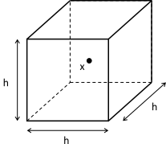
Parzen windows
- The total number of points inside the hypercube is \[ k = \sum_{n=1}^N \prob{K}{\frac{\vec{x} - \vec{x}^n}{h}} \]
- The density estimate becomes \[ \prob{P$_{KDE}$}{\vec{x}} = \frac{1}{Nh^d} \sum_{n=1}^N \prob{K}{\frac{\vec{x} - \vec{x}^n}{h}} \]
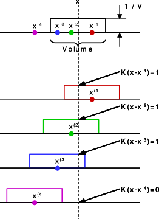
Note: Parzen window resembles a histogram, but with the window locations determined directly by the data!
Parzen windows
- What's the role of the kernel function?
- Let us compute the expectation of the estimate $\prob{P$_{KDE}$}{\vec{x}}$ \begin{align} E\left[\prob{P$_{KDE}$}{\vec{x}}\right] &= \frac{1}{Nh^d} \sum_{n=1}^N E\left[\prob{K}{\frac{\vec{x} - \vec{x}^n}{h}}\right]\\ & = \frac{1}{h^d} E\left[ \prob{K}{\frac{x-x^\prime}{h}}\right]\\ & = \frac{1}{h^d} \int \prob{K}{\frac{x-x^\prime}{h}} \prob{P}{x^\prime}dx^\prime\\ \end{align}
- $\prob{P$_{KDE}$}{\vec{x}}$ is a convolution of the true density with the kernel function!
- As $h\to 0$, the kernel approaches the Dirac delta and $\prob{P$_{KDE}$}{\vec{x}}$ approaches true density
\[ \prob{P$_{KDE}$}{\vec{x}} = \frac{1}{Nh^d} \sum_{n=1}^N \prob{K}{\frac{\vec{x} - \vec{x}^n}{h}} \]
\[ \prob{K}{u} = \begin{cases} 1 & |u_j| \lt \frac{1}{2} \forall j = 1\dots d\\ 0 & \text{otherwise} \end{cases} \]
Exercise
- Given dataset $X = \{4, 5, 5, 6, 12, 14, 15, 15, 16, 17\}$ use Parzen windows to estimate the density at $y=3,10,15$; use $h=4$
-
- Let's estimate $\prob{P}{y=3}$: $$ \frac{1}{10\times 4^1} \left[ \prob{K}{\frac{3-4}{4}} + \prob{K}{\frac{3-5}{4}} + \cdots +\prob{K}{\frac{3-17}{4}}\right] = \frac{1}{40} = 0.025 $$
- $ \prob{P}{y=10} = \frac{1}{10\times 4^1} \left[ 0 + 0 + 0 + 0 + 0 + 0 + 0 + 0 + 0 + 0\right] = \frac{0}{40} = 0 $
- $ \prob{P}{y=15} = \frac{1}{10\times 4^1} \left[ 0 + 0 + 0 + 0 + 0 + 1 + 1 + 1 + 1 + 0\right] = \frac{4}{40} = 0.1 $
Interactive: Parzen Window (Box Kernel) Accumulator
Calculating Parzen window estimate...
Exercise Presets:
Smooth kernels
- The Cube window has a few drawbacks
- Yields density estimates that have discontinuities
- Weights equally all points $\vec{x}_i$, regardless of their distance to the estimation point $\vec{x}$
- Often a smooth kernel is preferred
- $\prob{K}{\vec{x}} \ge 0$
- $\displaystyle\int_{\cal R} \prob{K}{\vec{x}}d\vec{x} = 1$
- Usually radially symmetric and unimodal, e.g. $\prob{K}{\vec{x}} = (2\pi)^{-d/2}e^{-\frac{1}{2}\vec{x}^T\vec{x}}$
- Just use it in our density estimator:
$$ \prob{P$_{KDE}$}{\vec{x}} = \frac{1}{Nh^d} \sum_{n=1}^N \prob{K}{\frac{\vec{x} - \vec{x}^n}{h}} $$ 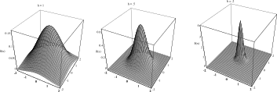
Interpretation
- The smooth kernel estimate is a sum of "bumps"
- The kernel function determines the shape of the bumps
- The parameter $h$, "smoothing parameter" determines their width
-
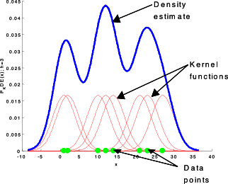
Interactive: Smooth KDE & The "Sum of Bumps"
Kernel:
Bandwidth Selection
Prior knowledge vs data

bandwidth selection
- Large $h$ over-smoothes the DE hiding structure
- Small $h$ yields a spiky uninterpretable DE
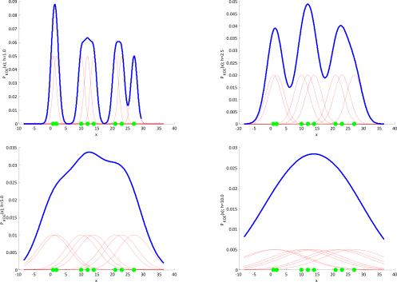
bandwidth selection
- Pick $h$ that minimizes the error between the estimated density and the true density
- Let us use MSE for measuring this error
- $E\left[ (\prob{P$_{KDE}$}{\vec{x}} - \prob{P}{\vec{x}})^2 \right] $
- $ = E\left[ \prob{P$_{KDE}$}{\vec{x}}^2 - 2 \prob{P$_{KDE}$}{\vec{x}} \prob{P}{\vec{x}} + \prob{P}{\vec{x}}^2\right]$
- $ = E\left[ \prob{P$_{KDE}$}{\vec{x}}^2\right] - 2 E\left[\prob{P$_{KDE}$}{\vec{x}}\right] \prob{P}{\vec{x}} + \prob{P}{\vec{x}}^2$
- Add and subtract $E^2\left[ \prob{P$_{KDE}$}{\vec{x}} \right]$
- \begin{align} = & E^2\left[ \prob{P$_{KDE}$}{\vec{x}} \right] - 2 E\left[\prob{P$_{KDE}$}{\vec{x}}\right] \prob{P}{\vec{x}} + \prob{P}{\vec{x}}^2 \\ & + E\left[ \prob{P$_{KDE}$}{\vec{x}}^2\right] - E^2\left[ \prob{P$_{KDE}$}{\vec{x}} \right] \end{align}
- \begin{align} = & (E\left[ \prob{P$_{KDE}$}{\vec{x}} \right] - \prob{P}{\vec{x}})^2 + E\left[ \prob{P$_{KDE}$}{\vec{x}}^2\right] - E^2\left[ \prob{P$_{KDE}$}{\vec{x}} \right] \end{align}
- This is an exact example of the bias-variance tradeoff: $$ \text{MSE}(h) = \text{Bias}^2(h) + \text{Variance}(h) $$
Bias-variance tradeoff (digression)
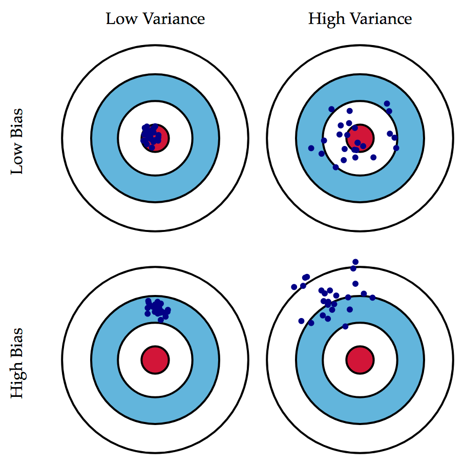
Bias-variance tradeoff (digression)
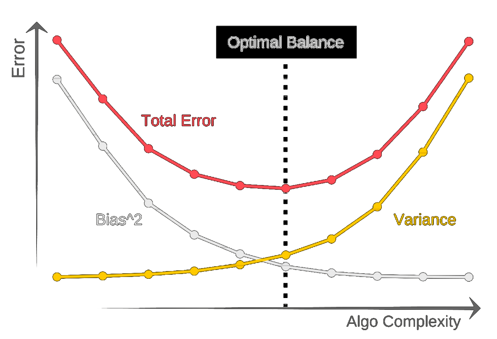
Bias-variance tradeoff (digression)
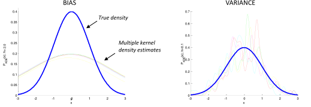
bandwidth selection
Subjective choice
- Plot out several curves and choose the estimate that best matches your subjective ideas
- Not too practical for high-dimensional data
Assuming everything is Normal
- Minimize the overall MSE $ h = \argmin \{ E\left[ \int (\prob{P$_{KDE}$}{\vec{x}} - \prob{P}{\vec{x}})^2 d\vec{x} \right]\} $
- Assuming the true distribution is Gaussian: $ h^* = 1.06\sigma N^{-\frac{1}{5}} $
- Can obtain better results with: $$ h^* = 0.9A N^{-\frac{1}{5}} \mbox{ where } A = \min(\sigma, \frac{IQR}{1.34}) $$
Interactive: Bias-Variance Tradeoff & Silverman's Rule
Bandwidth ($h$): 0.55
Empirical MSE: --
Notice: Optimal $h^*$ minimizes Bias² + Variance at the dip of the green MSE curve!
Bandwidth Presets:
N:
Unimodal distribution KDE
- 100 data points were drawn from the distribution
- True density (left), the estimates using $h=1.06\sigma N^{-1/5}$ (middle) and $h=0.9A N^{-1/5}$ (right)
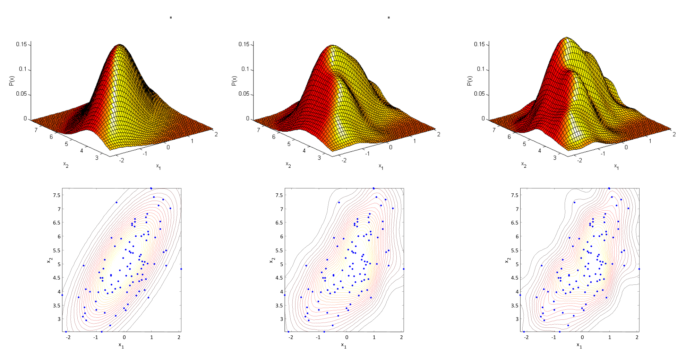
bimodal distribution KDE
- 100 data points were drawn from the distribution
- True density (left), the estimates using $h=1.06\sigma N^{-1/5}$ (middle) and $h=0.9A N^{-1/5}$ (right)
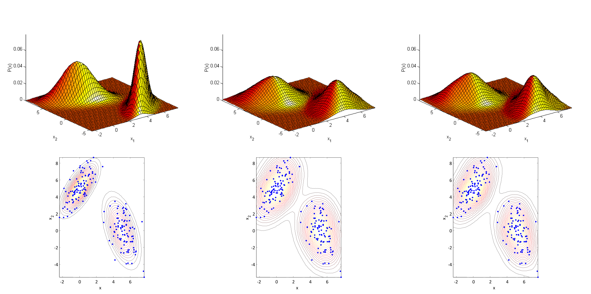
Multivariate KDE
Multivariate density estimation
Things to watch out for
- $h$ is the same for all the axes, so this density estimate is weighting all axes equally
- A problem if one or several of the features has larger spread than the others
A couple of "hacks" to fix this
- Pre-scaling each axis (e.g. to unit variance)
- Pre-whitening the data
- Whiten the data $\vec{y}=\Lambda^{-1/2}V^T\vec{x}$
- Estimate the density
- Transform everything back
- Equivalent to hyper-ellipsoidal kernel
Product kernels
Use it if "hacky" solutions are not your thing
- $\prob{P$_{KDE}$}{\vec{x}} = \frac{1}{N} \sum_{i=1}^N \prob{K}{\vec{x}, \vec{x}^i, h_1, \dots, h_d}$
- $\prob{K}{\vec{x}, \vec{x}^i, h_1, \dots, h_d} = \frac{1}{h_1h_2\dots h_d} \prod_{j=1}^d \prob{K}{\frac{x_j-x_j^i}{h_j}} $
- Consists of the product of one-dimensional kernels
- Note, kernel independence does not imply feature independence!
Interactive: 2D Multivariate KDE & Anisotropy
Kernel Mode:
Non-parametric Classification
The Dual: $k$-Nearest Neighbors
Recall: $\prob{P}{\vec{x}} \simeq \frac{k / N}{V}$
- In KDE, we fixed $V = h^d$ and estimated $k$ (count inside fixed volume)
- In $k$-NN, we fix $k$ and let the volume $V(\vec{x})$ adapt: $$ \prob{P$_{k\text{NN}}$}{\vec{x}} = \frac{k}{N \cdot V(\vec{x})} = \frac{k}{N \cdot V_d \cdot r_k^d(\vec{x})} $$ where $r_k(\vec{x})$ is the Euclidean distance to the $k$-th nearest neighbor of $\vec{x}$, and $V_d$ is the volume of the unit sphere in $\mathbb{R}^d$.
- Local Adaptive Resolution:
- Dense regions $\implies$ small $r_k(\vec{x})$, tiny $V(\vec{x})$ $\implies$ high spatial resolution
- Sparse regions $\implies$ large $r_k(\vec{x})$, large $V(\vec{x})$ $\implies$ heavy smoothing
$k$-NN Classification as Bayes Decision
Suppose we have $C$ classes and draw a sphere around $\vec{x}$ containing $k$ total points, with $k_i$ from class $\omega_i$.
- Unconditional density estimate: $\prob{P}{\vec{x}} = \frac{k}{N V}$
- Class-conditional likelihood: $\prob{P}{\vec{x}|\omega_i} = \frac{k_i}{N_i V}$
- Class prior probability: $\prob{P}{\omega_i} = \frac{N_i}{N}$
- Plugging into Bayes' Rule: $$ \prob{P}{\omega_i|\vec{x}} = \frac{\prob{P}{\vec{x}|\omega_i}\prob{P}{\omega_i}}{\prob{P}{\vec{x}}} = \frac{\left(\frac{k_i}{N_i V}\right) \left(\frac{N_i}{N}\right)}{\frac{k}{N V}} = \mathbf{\frac{k_i}{k}} $$
-
The intuitive $k$-NN majority vote is the exact Bayes posterior under $k$-NN density estimation!
Decision boundary: 2 classes
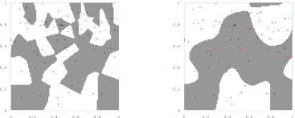
In the general case, we estimate class densities non-parametrically using KDE:
$\prob{P$_{KDE}$}{\vec{x}|\omega} = \frac{1}{Nh^d} \sum_{n=1}^N \prob{K}{\frac{\vec{x} - \vec{x}^n}{h}}$, where $\prob{K}{\vec{x}} = (2\pi)^{-d/2}e^{-\frac{1}{2}\vec{x}^T\vec{x}}$
Warning: The non-parametric decision boundary is highly sensitive to outliers!
Interactive: 2-Class KDE Boundary & Outlier Vulnerability
Decision Boundary Status
Class Boundary:
■ Class 1 ($\omega_1$)
■ Class 2 ($\omega_2$)
Restricted Bayes Optimal Classifier
The Dilemma: Non-parametric KDE boundaries have high variance and are sensitive to outliers. As $h \to 0$, the estimate degenerates into delta spikes at each point.
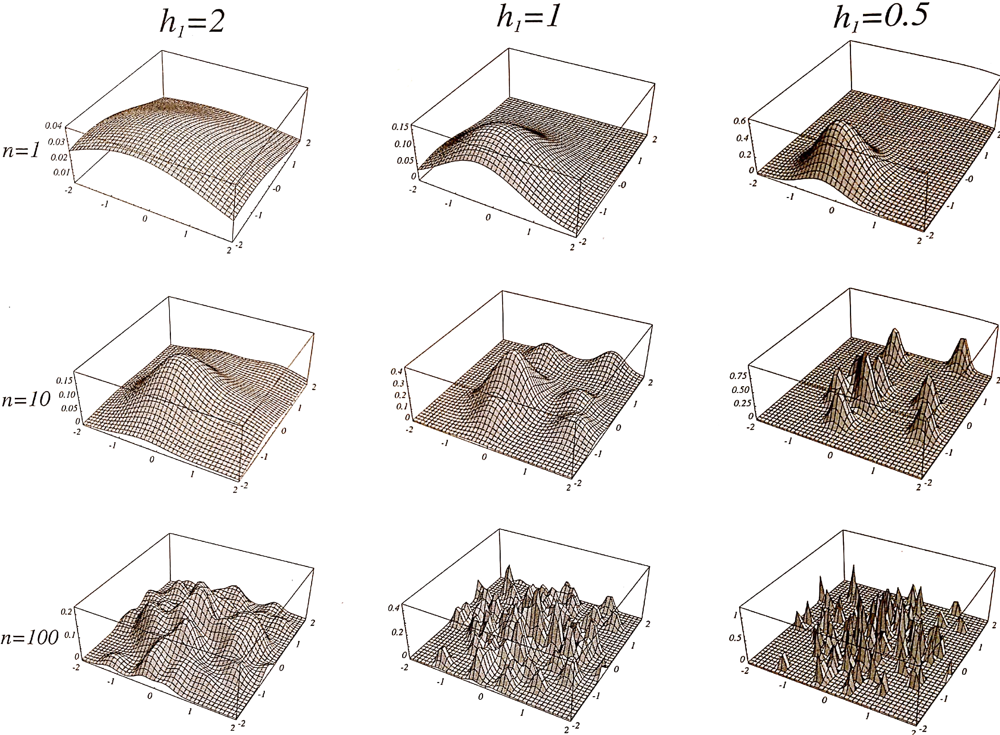
Tong & Koller (AAAI 2000):
To control variance, restrict the hypothesis class $\mathcal{H}$ to linear hyperplanes.
To control variance, restrict the hypothesis class $\mathcal{H}$ to linear hyperplanes.
Next Lecture:
The max-margin hyperplane is the Restricted Bayes-Optimal Classifier!
The max-margin hyperplane is the Restricted Bayes-Optimal Classifier!
→ Support Vector Machines (SVM)
Take Home Points
- Beyond Parametric Forms: Estimate $p(\vec{x})$ directly from empirical data without assuming fixed distribution families.
- Parzen Windows: Eliminate rigid histogram bins by centering smooth kernels at each data point.
- Bandwidth Controls Bias-Variance: Kernel shape matters little; bandwidth $h$ governs overfitting vs. oversmoothing ($h^* \propto N^{-1/5}$).
- Multivariate Scaling: Isotropic kernels fail under correlated features; resolve with pre-whitening or product kernels.
- Duality & Bridge to SVMs: $k$-NN adapts volume for fixed $k$; KDE boundary sensitivity motivates max-margin hyperplanes.